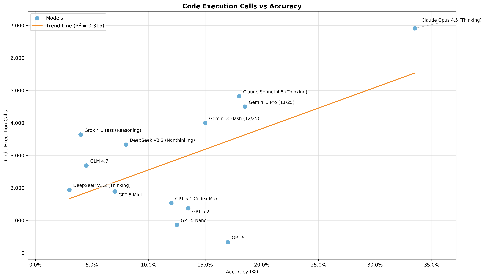

FormalProofBench pairs natural-language problems with Lean 4 statements that models must prove for the Lean checker.
Abstract
We present FormalProofBench, a private benchmark designed to evaluate whether AI models can produce formally verified mathematical proofs at the graduate level. Each task pairs a natural-language problem with a Lean~4 formal statement, and a model must output a Lean proof accepted by the Lean 4 checker. FormalProofBench targets advanced undergraduate and graduate mathematics, with problems drawn from qualifying exams and standard textbooks across topics including analysis, algebra, probability, and logic. We evaluate a range of frontier models with an agentic harness, and find that the best-performing foundation model achieves 33.5% accuracy, with performance dropping rapidly after that. In addition to the accuracy numbers, we also provide empirical analysis of tool-use, failure modes, cost and latency, thereby providing a thorough evaluation of the formal-theorem proving abilities of frontier models.
Problem
Existing formal mathematics benchmarks focus on competition-level problems. There is no private benchmark evaluating whether AI models can produce formally verified proofs at the graduate level across diverse mathematical areas.
Approach
FormalProofBench pairs 200 natural-language graduate-level problems (from qualifying exams and textbooks across real analysis, probability, functional analysis, number theory, logic, algebra, algebraic geometry, and linear algebra) with Lean 4 formal statements. Models must output a Lean proof accepted by the Lean 4 checker. An agentic harness with search and code execution tools evaluates frontier models.
Results
The best-performing model, Claude Opus 4.5 (Thinking), achieves 33.5% accuracy at a cost of $1.34 per test problem. Gemini 3 Pro reaches 18.5%, Claude Sonnet 4.5 18%, and GPT 5 17%. Models vary widely in tool-use strategies, and a positive but modest correlation exists between code execution calls and accuracy.

Figure 5: We observe a positive but modest correlation between the number of code execution calls and accuracy across models. Notable outliers include GPT 5, which achieves relatively high accuracy with very few code execution calls, and Grok 4.1 Fast, which executes substantial code but achieves low accuracy.